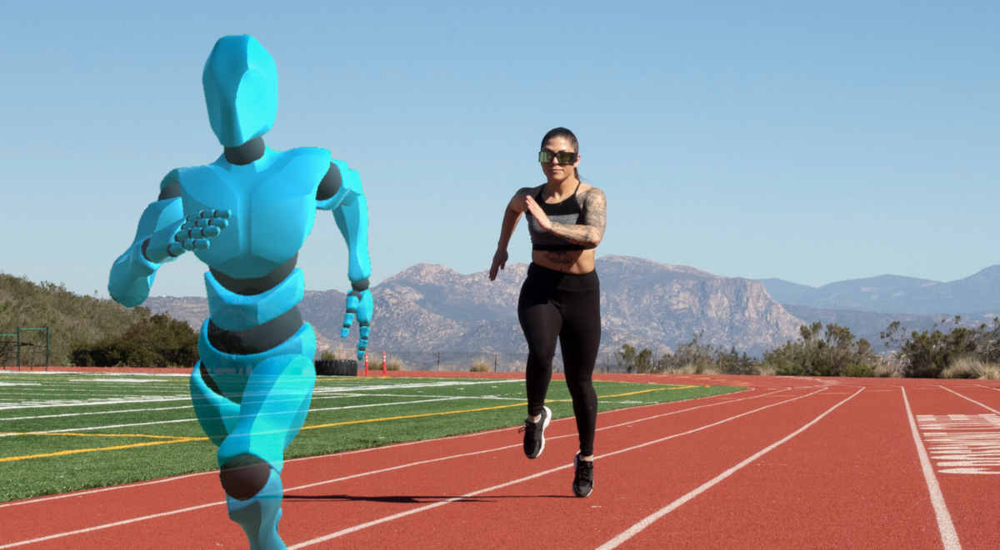

Tecnologías Destacadas
Monitores de Actividad
Los monitores de actividad han revolucionado el seguimiento del rendimiento deportivo. Estos dispositivos portátiles, como relojes inteligentes y pulseras de fitness, permiten a los atletas y entrenadores recopilar datos precisos sobre la frecuencia cardíaca, la distancia recorrida, las calorías quemadas y más. Esto es esencial para ajustar el entrenamiento y mejorar el rendimiento.
Realidad Virtual
La realidad virtual (RV) ha encontrado su lugar en el mundo del deporte al proporcionar experiencias inmersivas para los atletas y los fanáticos. Los atletas pueden utilizar RV para entrenar en entornos virtuales que simulan condiciones reales, lo que les permite mejorar su toma de decisiones y habilidades. Además, los fanáticos pueden experimentar los eventos deportivos desde la comodidad de sus hogares a través de transmisiones de RV, brindando una nueva dimensión a la visualización de deportes.

Análisis Deportivo
El análisis deportivo avanzado utiliza tecnologías como sensores y cámaras de alta velocidad (Las cámaras de alta velocidad (cámara lenta) se utilizan donde se analiza el movimiento o el comportamiento del material que no puede ser detectado por el ojo humano o por cámaras convencionales.) para recopilar datos detallados durante los eventos deportivos. Estos datos se utilizan para evaluar el rendimiento de los atletas, identificar áreas de mejora y tomar decisiones tácticas. El análisis deportivo ha revolucionado deportes como el fútbol y el baloncesto, donde se utilizan datos para optimizar estrategias y tácticas.